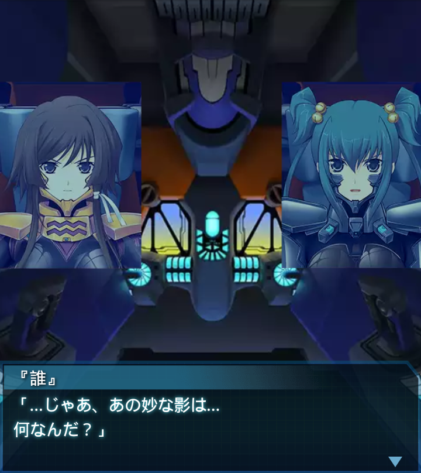

篁唯依
「…もうすぐマラジョージナヤ基地が見えてくる筈ですが…」

崔亦菲
「この視界じゃ無理じゃない？それほど大きな施設じゃない
らしいし…」

『誰』
「…じゃあ、あの妙な影は…何なんだ？」

篁唯依
「あれは――基地ではないぞ！ま、まさか研究施設が南極にも
あったとは…」
『誰』
「可能性としてはあり得る話だ。どうりで呼びかけに反応が
なかった訳だ…」
崔亦菲
「モーソン基地を襲ったＢＥＴＡはこの施設と関係がある…に
決まってるわよね」
篁唯依
「種を明かせば簡単だったな。――大隊規模のＢＥＴＡ接近！
『本隊』はこいつらか！」
『誰』
「全機兵器使用自由！視界が悪い、くれぐれも
討ち漏らすんじゃないぞ！」
「「――了解！！」」